task
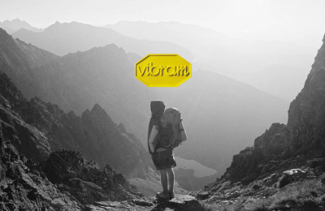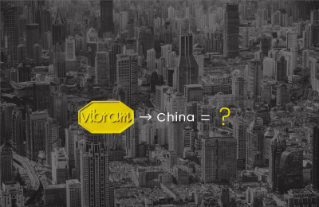
what
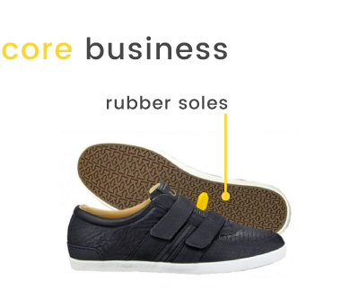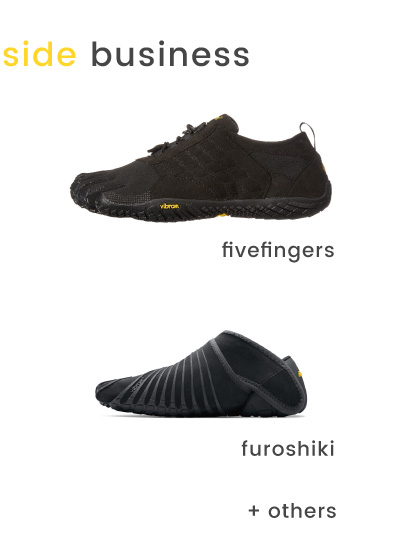
design method
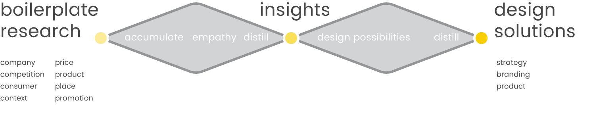
key insights
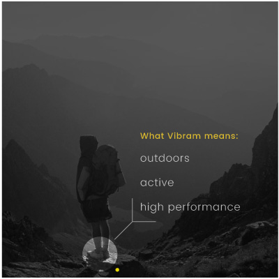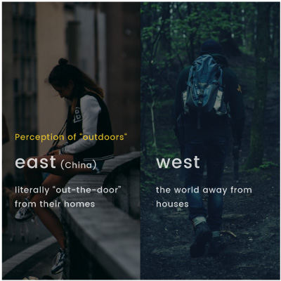 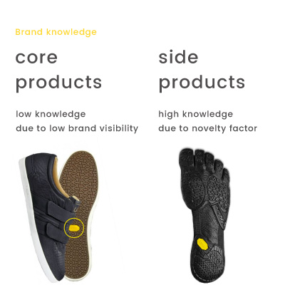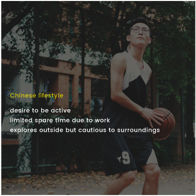
Vibram’s redefined values
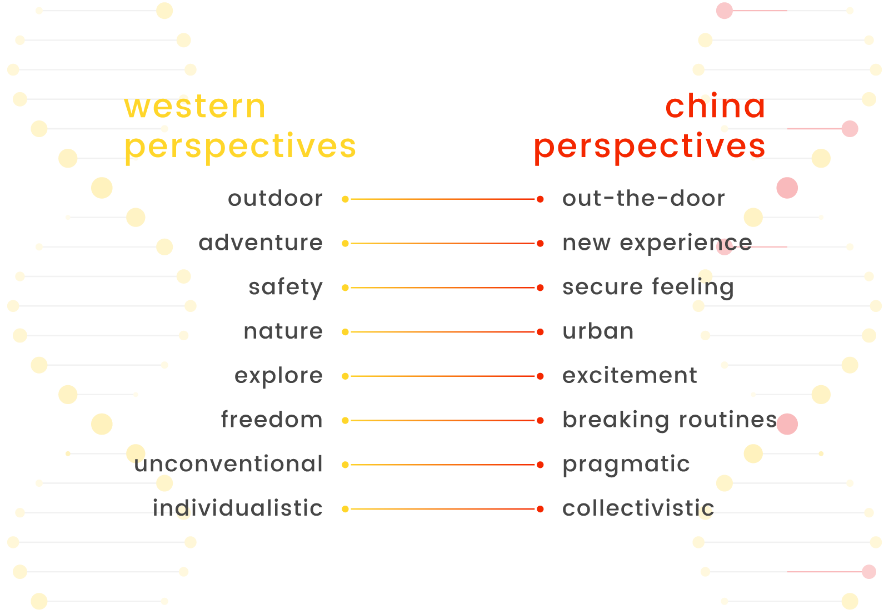
It was found that much of Vibram’s Western-leaning values translated into something different in China. Redefining “outdoor” from a Chinese perspective, whilst ensuring the core values of the Vibram brand were communicated, was crucial for the development of the design proposal.
design proposal
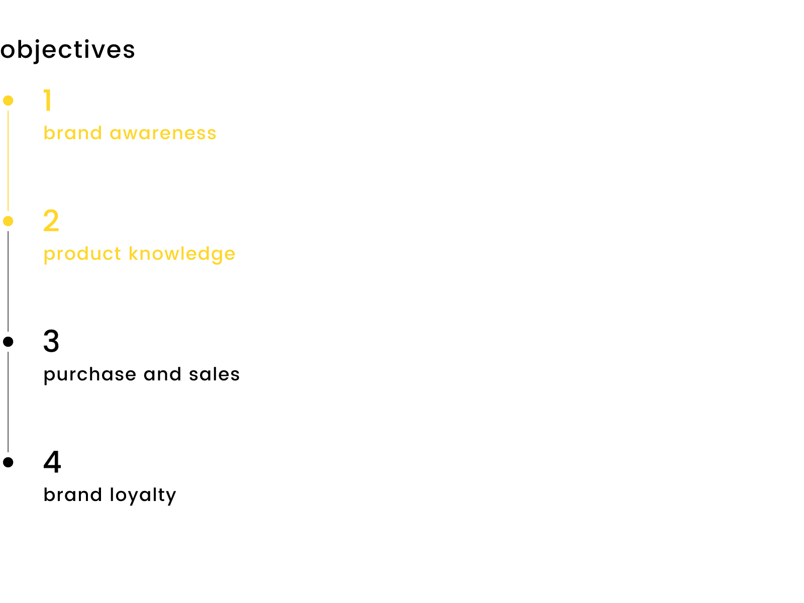
Vibram as a brand is not widely known in China, thus it would be important to establish a brand presence that clearly communicates its values. Secondly, although the brand is not widely known, Vibram’s secondary products such as its FiveFingers shoes have high recognisability as a product itself due to its novelty. If some novelty factor were to be incorporated in promoting Vibram’s main product of rubber soles without changing the product itself, its product knowledge can be increased. The design solutions focused on these two objectives while keeping objectives 3 and 4 in mind.
vdiscover app
active route planner
The first component of the app is a route planner that calculates alternative routes on top of the quickest one. This allows to explore more of their immediate surroundings, getting them literally outdoors more. Also included are Vibram recommended urban landmarks that users can see and explore, and Vibram events that are happening nearby.
meet and find active friends
The second component of the app allows users to meet each other and explore activities. The radio button allows users to broadcast their location to friends, and approximate location to people who have similar fitness habits, hobbies, and interests, and connect with each other.
Ultimately vdiscover tries to establish brand knowledge for Vibram by indirectly pushing its users to walk, explore, and connect more, aligning it with the company’s proposed values and vision of “urban outdoors” and communal well-being.
marketing signage
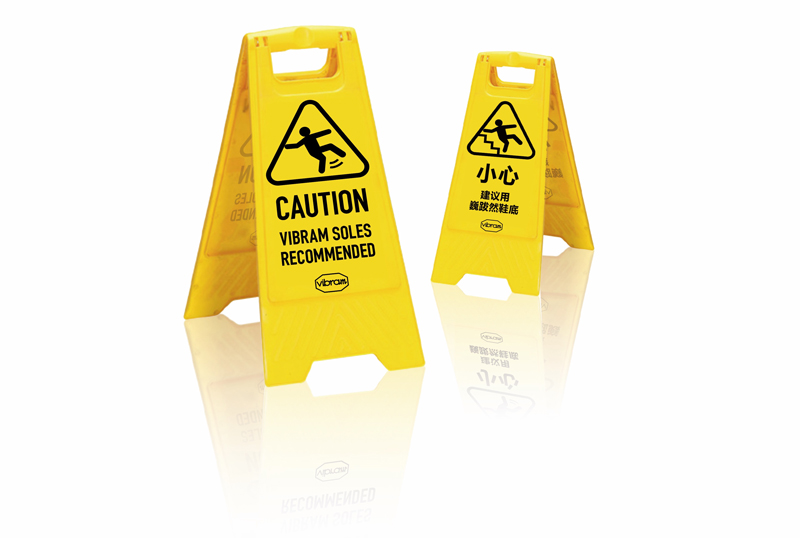
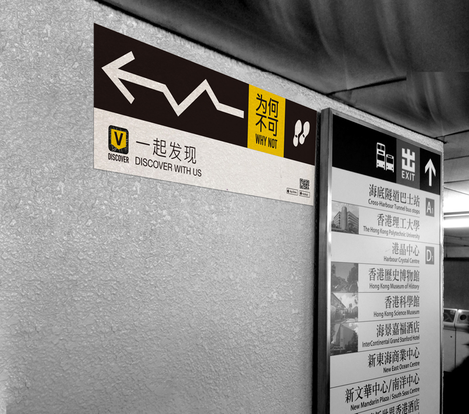
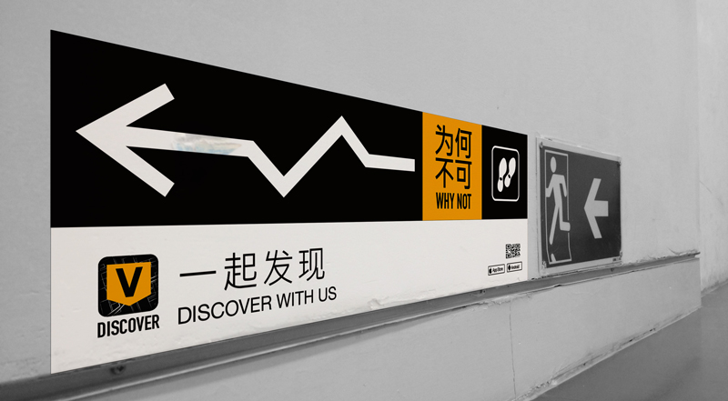
On top of the app, marketing signage similar to traditional advertisement campaigns were designed to establish product, brand, as well as app knowledge. The wet caution signs indirectly informs passerbys that Vibram has excellent grip from its rubber soles, while the other signage tries to nudge people to take a route less travelled as well as to promote the vdiscover app.
product placement
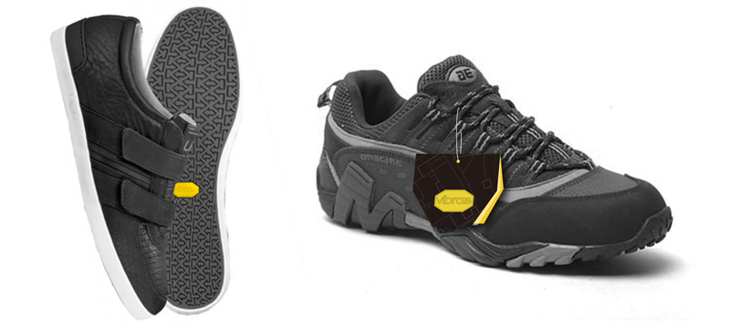
old and new product visibility
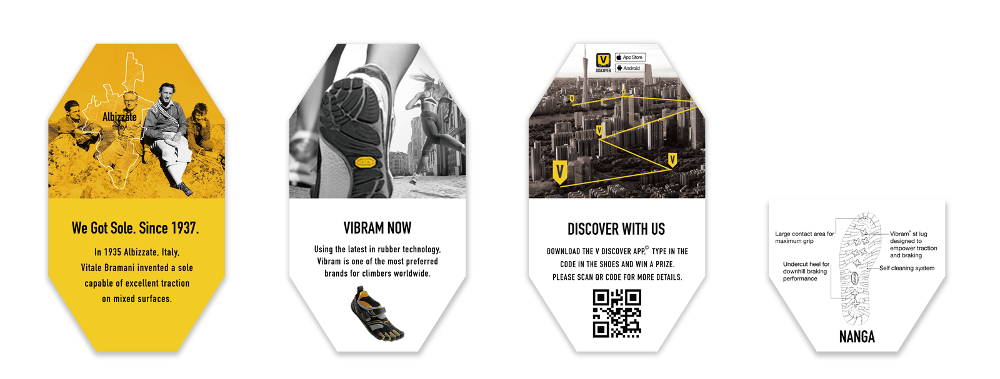
new product signage
The tags attempt to enhance Vibram’s product visibility, as well as provide redeemable reward schemes and promote vdiscover.